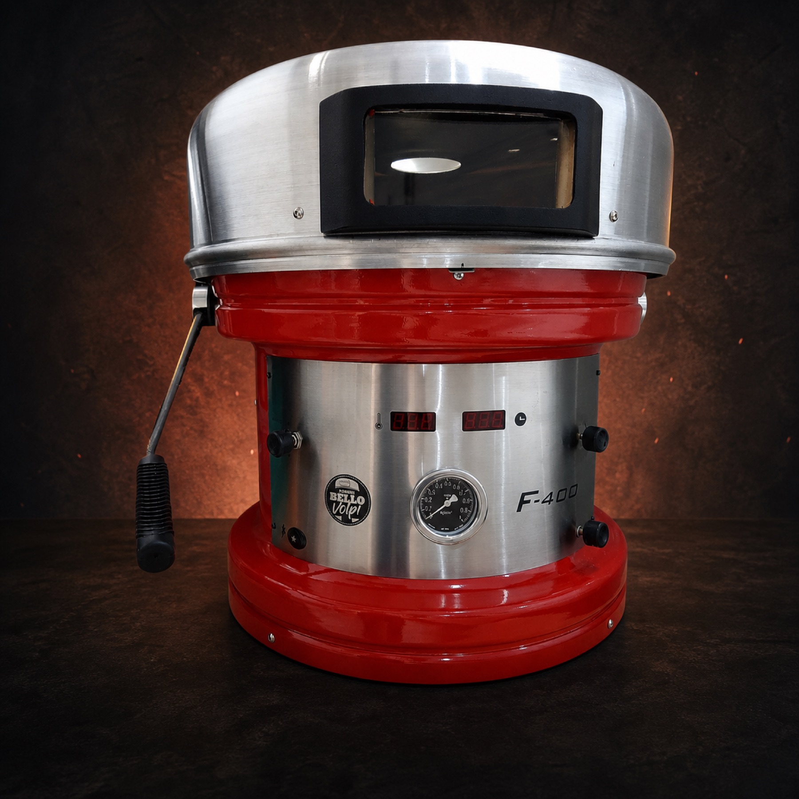
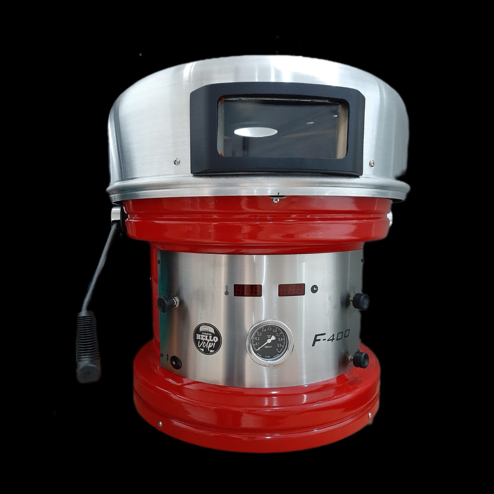

A melhor pizza.
No menor tempo.
Performance profissional para sua pizzaria produzir com ritmo, controle e a assinatura que seus clientes esperam.
- Pix
- 10% de desconto
- Cartão
- 12x sem juros no total
- Frete
- Todo o Brasil, sob consulta

Menos espera. Mais giro de salão.
Seu forno precisa acompanhar
o ritmo da sua pizzaria.
Performance que aparece
em cada serviço.
O F-400 une construção robusta, operação prática e o calor necessário para entregar consistência sem complicar a rotina.

-
01
Ritmo de produção
Pizza pronta em até 2 minutos para atender picos de movimento com mais fluidez.
-
02
Operação limpa
Sem lenha, fuligem ou armazenamento de combustível sólido no ambiente.
-
03
Controle prático
Opere com gás GLP ou natural e acompanhe o preparo pelo visor da cúpula.
-
04
Construção durável
Corpo em alumínio pintado e cúpula em alumínio escovado para a rotina profissional.
Compacto no espaço.
Grande na entrega.
Desenvolvido para quem leva pizza a sério. O formato compacto facilita a instalação, enquanto o lastro de 454 mm recebe pizzas de até 400 mm.
-
Visor frontalacompanhe o preparo sem perder o ponto
-
Dois combustíveisdisponível para GLP ou gás natural
-
Pronta entregasujeita à disponibilidade no atendimento
Ficha técnica
F-400.
As informações essenciais para planejar a instalação do seu próximo forno.
- Pizza
- Ø 400 mm
- Lastro
- 454 mm
- Base
- 480 mm
- Altura
- 580 mm
- Peso
- 36 kg
- Gás
- GLP / GN
Cúpula escovada com visor e corpo com pintura · Alumínio
A tradição da pizza.
Com uma operação mais prática.
Cada operação tem suas necessidades. O F-400 é uma alternativa para quem busca praticidade, compactação e controle sem abrir mão do resultado.
| Na rotina | Bello Volpi F-400 | Forno a lenha tradicional |
|---|---|---|
| Espaço | Estrutura compacta | Exige espaço para forno e lenha |
| Limpeza | Sem cinzas ou fuligem da lenha | Demanda manejo de resíduos |
| Praticidade | Controle a gás | Alimentação constante do fogo |
| Mobilidade | Mais fácil de transportar | Instalação geralmente fixa |
Condições especiais
Seu novo ritmo
começa agora.
Fale diretamente com a Bello Volpi para receber preço, prazo e frete para o seu CEP.
Receber preço e freteAtendimento direto pelo WhatsApp Business
- FORNO A GÁS
- F-400
- PIX
- 10% OFF
- CARTÃO
- ATÉ 12X
- ESTOQUE
- Pronta entrega*
Antes de acender
o forno.
Ainda ficou alguma dúvida? Nosso atendimento ajuda você a confirmar a melhor configuração para sua operação.
Tirar uma dúvidaO F-400 funciona com qual tipo de gás?
O modelo pode ser fornecido para GLP ou gás natural. Confirme a configuração desejada no momento do pedido.
Qual tamanho de pizza ele assa?
O F-400 comporta pizzas de até 400 mm de diâmetro e possui lastro de 454 mm.
Vocês entregam em todo o Brasil?
Sim. O valor do frete e o prazo são calculados conforme o CEP no atendimento.
Como funcionam as condições de pagamento?
Você recebe 10% de desconto no Pix ou pode pagar em até 12x no cartão. Consulte as condições vigentes com nosso time.
O produto está disponível imediatamente?
Trabalhamos com pronta entrega sujeita à disponibilidade. Confirme o estoque pelo WhatsApp.